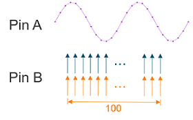
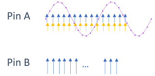
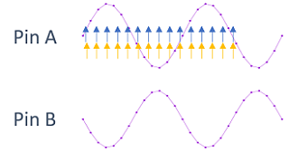
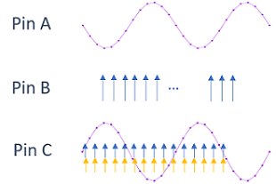
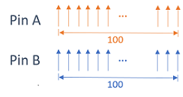
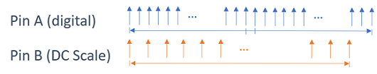
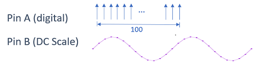

Forcing waveform and sampling in parallel on multiple pins
SmartRDI 7.5.1 supports parallel waveform and sampling actions with multiple pin().
Before RDI 7.5.1, parallel waveform and sampling for different DC Scale pins in one SmartRDI command is NOT supported with .pin()...pin(). If you intend to do parallel waveform for different pins, you have to use a multiport command. For example,
RDI_BEGIN();
rdi.dc().port("pt1").pin("A1").vForce().waveform(sine1).sampleCycle(1000).execute();
rdi.dc().port("pt2").pin("A2").iForce().waveform(sine2).sampleCycle(1000).execute();
RDI_END();
Starting from 7.5.1, SmartRDI supports parallel waveform and sampling actions with multiple pin().
Parallel DC actions on DC Scale pins
For DC Scale pins, SmartRDI supports the following scenarios of parallel waveform and sampling:
- Parallel waveform sourcing on two
pins:
rdi.dc().pin("A").vForce().waveform(sine1).FS(10e3). .pin("B").iForce().waveform(sine2).FS(10e3).execute(); - Parallel sampling on two pins
rdi.dc().pin("A").iMeas().samples(1024).FS(10e3) .pin("B").vMeas().samples(1024).FS(10e3).execute(); - Parallel waveform sourcing on a pin while sampling on another pin:
rdi.dc().pin("A").vForce().waveform(wav).FS(10 kHz) .pin("B").|vMeas()|iMeas()|.samples(100).FS(10 kHz).execute();
- Parallel waveform sourcing and sampling on a pin while sampling on another pin:
rdi.dc().pin("A").vForce().waveform(wave).iMeas().FS(10 kHz) .pin("B").vMeas().samples(100).FS(10 kHz) .execute();
- Parallel waveform sourcing and sampling on a pin while waveform sourcing on another pin:
rdi.dc().pin("A").vForce().waveform(wave1).iMeas().FS(10 kHz) .pin("B").iForce().waveform(wave2).FS(10 kHz) .execute();
- Parallel waveform sourcing on a pin, sampling on a pin, and waveform sourcing and sampling
on a pin:
rdi.dc().pin("A").vForce().waveform(wave1).FS(10 kHz) .pin("B").vMeas().samples(100).FS(10 kHz) .pin("C").iForce().waveform(wave2).vMeas().FS(10 kHz) .execute();
- The following setups can be different for different pins.
- The following commands and parameter must have the same value for different pins.
- FS()
- samplePeriod()
- sampleCycle()
- Sampling size
- measWait()
- DO NOT use the repeat() command in parallel waveform and sampling.
Parallel sampling on digital channels
For digital channels, SmartRDI 7.5.1 supports parallel sampling only and does not support parallel waveform. For example,
RDI_BEGIN();
//VEC mode
rdi.dc().pin("PPMU1").iMeas().samples(1024).capMode(TA::VEC).FS(10 KHz)
.pin("PPMU2").vMeas().samples(1024).capMode(TA::VEC).FS(10 KHz).execute();
//TRIG mode
rdi.dc().pin("PPMU1").vMeas().samples(1024).capMode(TA::TRIG).FS(10 KHz)
.pin("PPMU2").iMeas().samples(1024).capMode(TA::TRIG).FS(10 KHz).execute();
RDI_END();
- capMode() must have the same value for all the specified pins.
- Do not do parallel sampling for pure BADC and PPMU actions.
- TRIG
capMode:
rdi.dc().pin("A").vMeas().samples(10).FS(10 kHz).capMode(TA::TRIG) .pin("B",TA::BADC).vMeas().samples(10).FS(10 kHz).capMode(TA::TRIG) .execute();rdi.dc().pin("A",TA::BADC).vMeas().samples(10).FS(10 kHz).capMode(TA::TRIG) .pin("B",TA::BADC).vMeas().samples(10).FS(10 kHz).capMode(TA::TRIG) .execute();rdi.dc().pin("A").vMeas().samples(10).FS(10 kHz).capMode(TA::TRIG) .pin("B").vMeas().samples(10).FS(10 kHz).capMode(TA::TRIG) .execute(); - VEC capMode:
rdi.dc().pin("A").vMeas().samples(100).FS(10 kHz).capMode(TA::VEC).valueMode(TA::BADC) .pin("B").iMeas().samples(100).FS(10 kHz).capMode(TA::VEC).valueMode(TA::BADC) .execute();rdi.dc().pin("A",TA::BADC).vMeas().samples(100).FS(10 kHz).capMode(TA::VEC) .pin("B",TA::BADC).iMeas().samples(100).FS(10 kHz).capMode(TA::VEC) .execute();rdi.dc().pin("A").vMeas().samples(100).FS(10 kHz).capMode(TA::VEC).valueMode(TA::SA) .pin("B").iMeas().samples(100).FS(10 kHz).capMode(TA::VEC).valueMode(TA::SA) .execute();
Follow these rules when using parallel PPMU/BADC sampling:
- The capMode() values for different pins must be the same: TA::TRIG or TA::VEC.
- PPMU and BADC sampling actions can be mixed in the same execute() (new in 7.10.0).
- Multiple digital channels cannot share the same BADC.
- The following commands and parameter must have the same value for different pins.
- FS()
- samplePeriod()
- sampleCycle()
- Sampling number
- measWait()
- DO NOT use the repeat() command in parallel waveform and sampling.
Parallel PPMU/BADC sampling with DC Scale sampling or waveform
- PPMU sampling with DC Scale sampling:
rdi.dc().pin("A").iMeas().samples(100).FS(30 kHz).capMode(TA::TRIG) .pin("B").vMeas().samples(250).FS(40 kHz) .execute();
- PPMU sampling with DC Scale waveform:
rdi.dc().pin("A").iMeas().samples(100).FS(20 kHz).capMode(TA::TRIG) .pin("B").vForce().waveform(wave).FS(50 kHz) .execute();
Functional changes
- Introduced in SmartRDI 7.5.1
- SmartRDI 7.10.0: More parallel DC actions on multiple pins are supported.